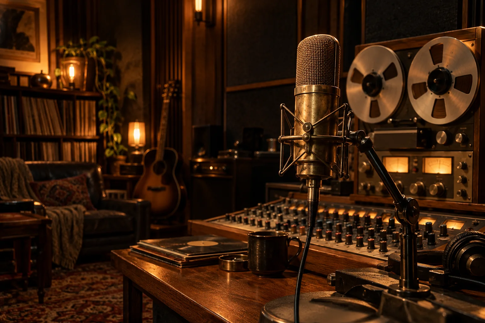

Хард, дарк, дрилл, мелодик, трэп и восточный. Слушай новые сочетания живых инструментов, баса и барабанов. Понравился бит — забирай WAV.

Пять битов каждый раз звучат по-новому. Можно слушать, перематывать волну и сохранять WAV. Записи голоса здесь пока нет.